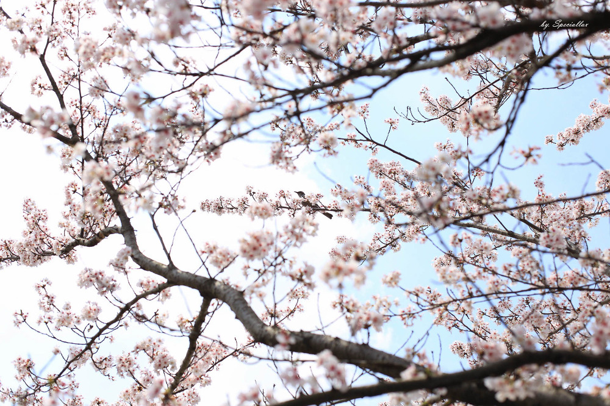

자기소개서
1.기본사항

2.일/아르바이트 경험
직장생활은 안해봤지만 서빙,패스트푸드점,치킨 집 등 다양한 알바를 해봤어요
3.좋아하는것과 싫어하는것
MBTI 관심 많은데 저는 INFP 이고요 낮을 많이 가리는 편이라 먼저 말 걸어주시면 좋을 것 같아요
4.꽃구경 추천하는 장소
제가 광산구에 있는 첨단에 거주 중인데 집 앞 쌍암공원에 핀 벚꽃이 참 예쁘더라 고요
5.최근 본 영화
영화는 아니지만 최근에 넷플릭스에서 종이의집 이라는 드라마를 봤어요
화이팅 !!